Primary Metric (mIoU)
0.516
Evaluation of the foundational SAM 3 model on the RWTD test split using both oracle points and text label prompting.
evaluationsam3foundation model
Run: sam3-rwtd-both-test-visuals (reported on 2026-03-12)
What was done: Zero-shot evaluation of facebook/sam3 using oracle points and text descriptions, compared against a fully unprompted dense baseline.
Surprising Finding: The exhaustive unprompted "dense" baseline achieves a higher aggregated mIoU (0.537) than targeted oracle points (0.516). This indicates that while point-prompting offers targeted control, dense auto-generation captures more exhaustive texture boundaries by sheer volume.
What works: When restricted to prompting, points are highly effective at guiding the model compared to text.
Where it fails: The text descriptions alone are sometimes not sufficient to distinguish closely overlapping visual properties.
Comparing the distribution of mIoU scores, instance-level performance, and the explicit impact of prompting vs unprompted baselines.
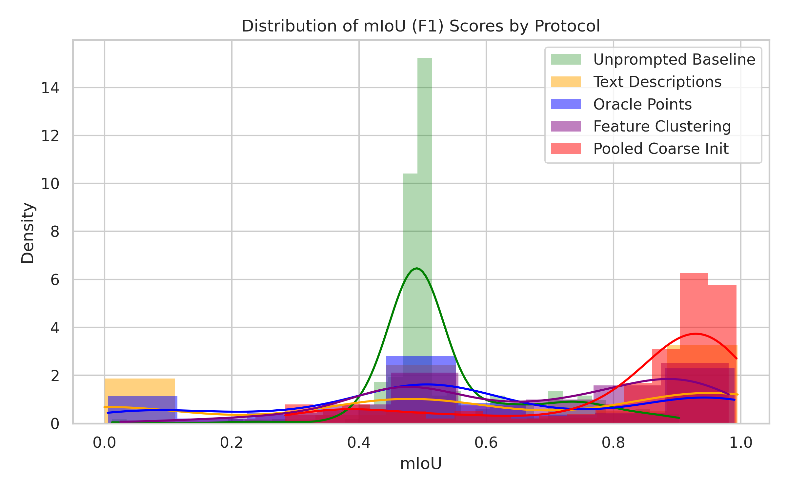
Comparing distributions: The unprompted baseline captures a highly overlapping distribution to Oracle points, while text prompting shows high variance.
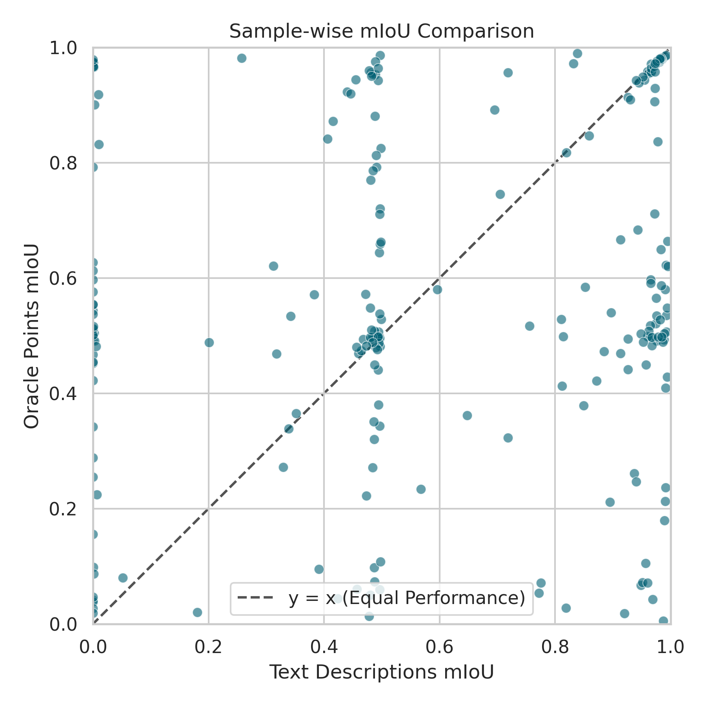
Matched pairs show that Oracle points strongly outperform text descriptions across almost all individual samples.
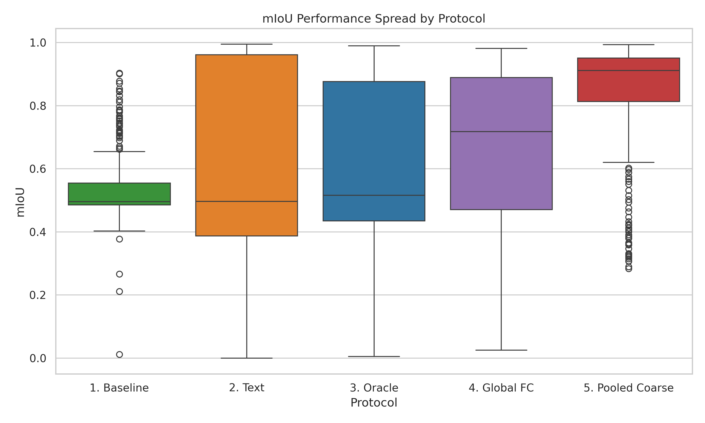
The dense unprompted baseline establishes a strong upper spread, competitive with Oracle points and significantly higher than Text prompting.
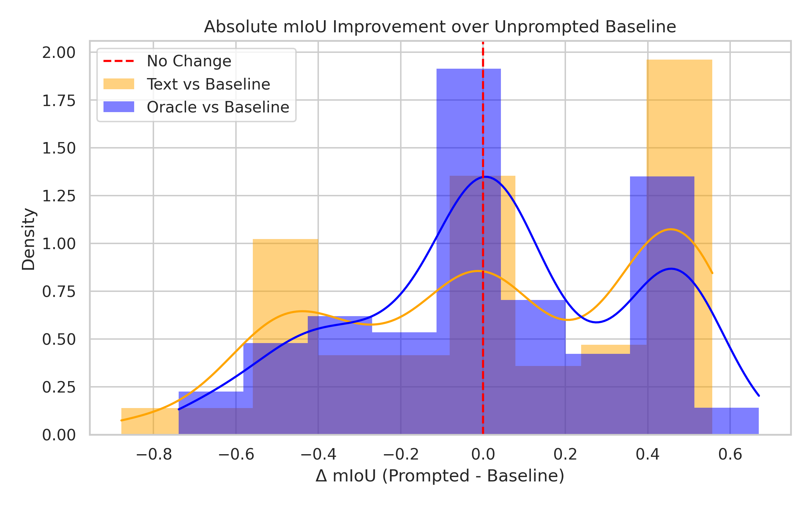
Histograms of (Prompted - Baseline) mIoU. The density over zero (red line) indicates cases where prompting provided an advantage over the dense baseline.
Representative samples from RWTD test evaluated with oracle points. Click any image to enlarge.
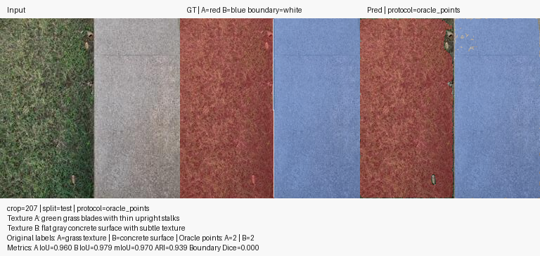
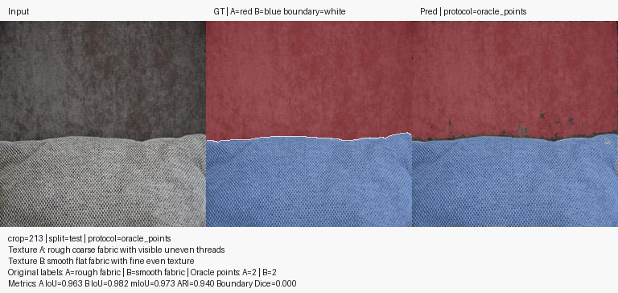
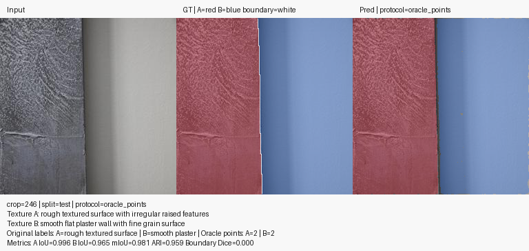
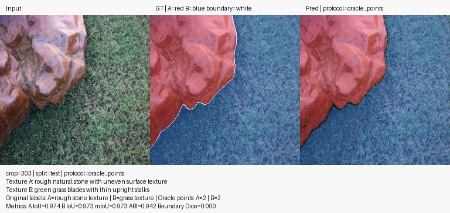
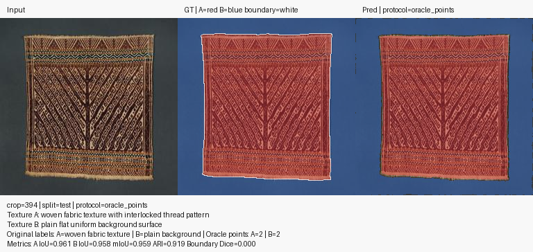
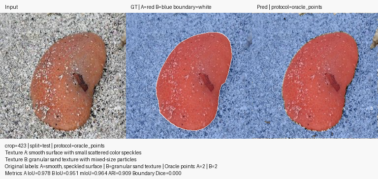
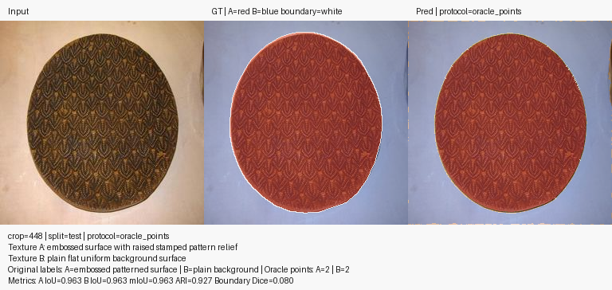
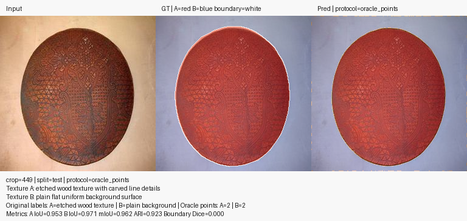
Failure cases and severe miss-predictions from the sample pool.
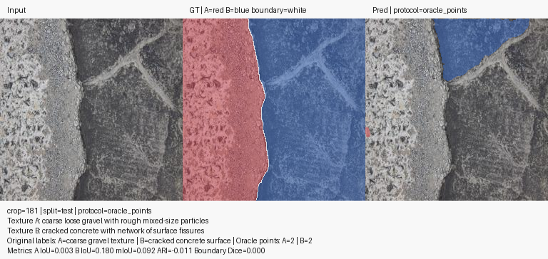
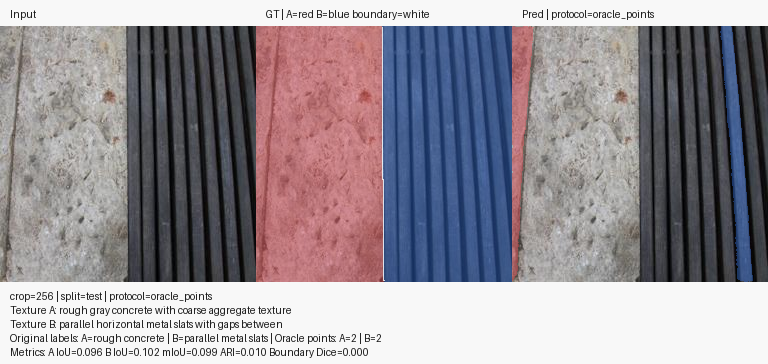
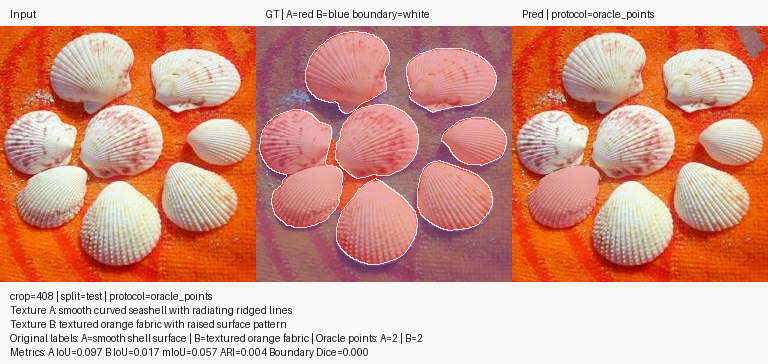
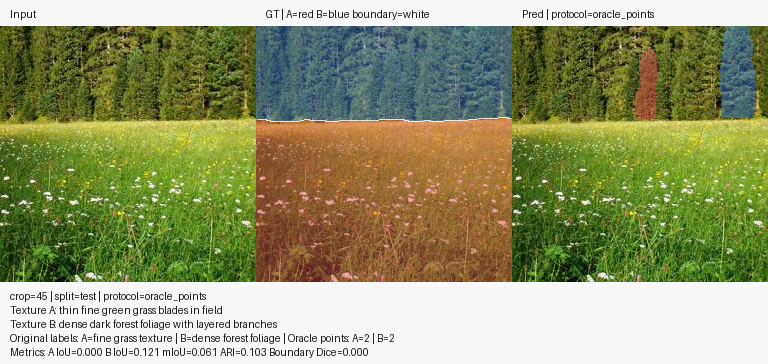
| Repro Config | repro/config.json |
|---|---|
| Experiment Terms | repro/experiment_terms.md |